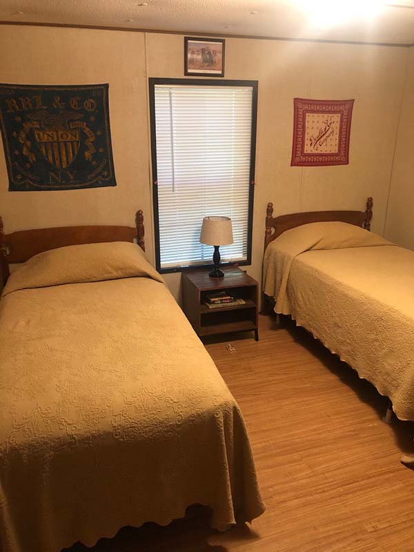
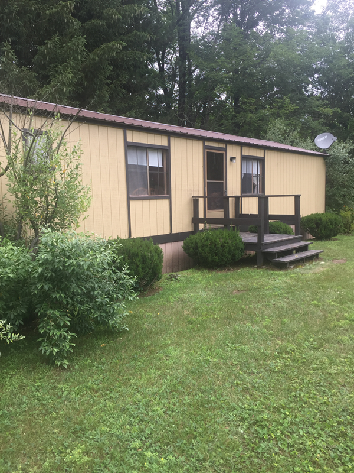

Local Coverage
Creek Fishing at Your Doorstep: Cabin Rentals Catskills for Anglers in Livingston Manor
Serving the Livingston Manor community with excellence.
Serving the Livingston Manor community with excellence.
Livingston Manor has earned its reputation as one of the premier fly fishing destinations in the northeastern United States, and the cabin rentals along the Willowemoc Creek put anglers within steps of some of the most productive trout water in the Catskills. Sullivan County's streams have shaped the sport of American fly fishing for well over a century, and visitors who stay in creekside cabins experience that heritage firsthand every morning they step outside. The 12758 ZIP code is home to both wild and stocked trout populations, drawing rod-carrying guests from across the tristate area. For anglers who want to maximize their time on the water, staying in a cabin right along the creek eliminates the drive and puts every hour of daylight to use.
The Willowemoc Creek and the Beaverkill River are the two most celebrated trout streams in the Catskill region, and both flow within easy reach of Livingston Manor cabin properties. The Catskill Fly Fishing Center and Museum, located on Old Route 17, preserves the legacy of the sport and serves as a gathering point for visiting anglers looking for local knowledge and casting clinics. Covered Bridge Pool, Cairns Pool, and Hazel Bridge run are among the named pools that experienced fly fishers target throughout the season. These landmarks give guests staying in creekside cabins a ready-made itinerary from the moment they arrive in Sullivan County.
Spring brings the opening of regular trout season in April, and the hatches that follow through May and June create some of the most exciting dry fly fishing available anywhere in New York. Summer evenings on the Willowemoc produce reliable caddis and sulphur activity, while autumn offers lower water and vivid foliage along the stream banks in the 12758 ZIP code. Winter steelhead are not part of the local fishery, but cabin rentals in the Catskills remain available year-round for those who want to explore ice fishing on nearby reservoirs or simply rest beside a wood stove. Matching your visit to the right hatch chart improves both the fishing and the overall cabin experience.
Route 17 connects Livingston Manor to Roscoe just twelve minutes to the west, and the combined access to both the Willowemoc and the Beaverkill creates a fishing corridor unmatched in the northeast. From Parksville to DeBruce, the local road network follows stream valleys that lead directly to public fishing access points. Guests who book cabin rentals in the Catskills often pair their creek fishing with visits to local fly shops in Roscoe for tackle, tying materials, and stream condition reports. This connectivity between accommodations, supplies, and water is what makes Livingston Manor the practical base for any fishing-focused Catskills trip.
J&S Creekside Cabins in Livingston Manor provides exactly the kind of streamside access that serious and casual anglers look for when planning a fishing trip to the Catskills. The property sits along the Willowemoc Creek, giving guests the rare advantage of fishing from their own front yard without needing to drive to a public access point. Family owned and operated, J&S Creekside Cabins has built its reputation on clean, comfortable accommodations and genuine knowledge of the local waters and seasons. Whether you fly fish, spin cast, or simply want to watch the creek roll past while relaxing on the porch, this property caters to every level of angler. J&S Creekside Cabins
Not every cabin property in the Catskills offers direct creek access, and the distinction matters for anglers who want to fish early mornings and late evenings without a commute. J&S Creekside Cabins sits directly on the Willowemoc Creek, which means guests can walk from their cabin door to the water in under a minute. The stretch of creek adjacent to the property holds both wild brown trout and stocked fish during the regular season, providing consistent opportunities from April through October. cabin rentals Sullivan County NY This kind of immediate access is what separates a fishing-focused cabin stay from a standard vacation rental in the region. plan your first cabin stay in the Catskills

The Willowemoc Creek and its tributaries support populations of wild brown trout, stocked brown trout, and stocked rainbow trout. Wild brook trout inhabit the smaller feeder streams that flow into the main Willowemoc above DeBruce. New York State stocks the Willowemoc heavily in spring, and fish carry over through the season in the deeper pools and shaded runs near Livingston Manor. Understanding which species are present and where they hold in the stream helps cabin guests plan their approach and select the right flies or lures for each outing on the water.
Both rivers are legendary in fly fishing history, and guests staying at cabin rentals in the Catskills can fish either one within a short drive. The Willowemoc runs directly through Livingston Manor and offers varied water from riffles to deep pools, while the Beaverkill, accessible from Roscoe, tends to draw larger crowds during peak hatch periods. Many experienced anglers prefer the Willowemoc for its slightly lower pressure and the convenience of walking back to a creekside cabin between sessions. trout fishing cabins NY Staying in Livingston Manor gives you practical access to both waters without committing to either one exclusively.
Roscoe, known as Trout Town USA, sits at the junction of the Willowemoc and the Beaverkill, and several marked public fishing access points line both rivers within a ten-minute drive of J&S Creekside Cabins. Junction Pool, where the two rivers meet, is perhaps the most famous single pool in American fly fishing. Additional access points along the Beaverkill at Cooks Falls and Horton provide less crowded alternatives during busy weekends. Cabin guests who explore beyond the immediate Livingston Manor stretch often discover water that fishes well even during peak season traffic.

Packing the right gear for a Catskills cabin fishing trip depends on the season and the species you plan to target. A five-weight fly rod handles most situations on the Willowemoc and the Beaverkill, and waders are essential from early spring through late fall when water temperatures stay cool. J&S Creekside Cabins provides outdoor space for rod rigging, wader drying, and gear storage, so anglers can organize their equipment conveniently between sessions. weekend cabin getaway Catskills Local fly shops in Roscoe and Livingston Manor stock current patterns matched to active hatches, making it easy to restock during your stay.
Cabin rentals in the Catskills appeal to mixed groups where some members fish and others prefer hiking, reading, or exploring the local art and food scene in Livingston Manor. The hamlet hosts a growing number of independent shops, galleries, and farm-to-table dining options that give non-anglers plenty to do during the day. Trails in Catskill State Park, visits to Bethel Woods Center for the Arts, and scenic drives through Sullivan County all pair well with a fishing-oriented cabin trip. This balance between creek access and broader Catskills activities is why J&S Creekside Cabins draws families and friend groups throughout the season. J&S Creekside Cabins
J&S Creekside Cabins serves guests throughout Livingston Manor and Sullivan County, including Roscoe, DeBruce, Parksville, Lew Beach, Liberty, Willowemoc, Ferndale, and Monticello. Whether you are arriving from Wurtsboro or heading up from Middletown, our cabin rentals are nearby and ready for your next fishing trip.